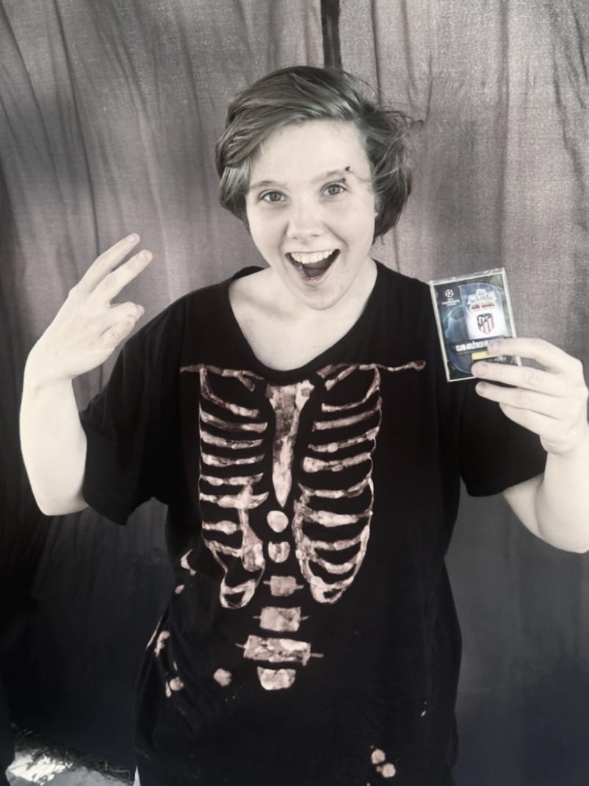
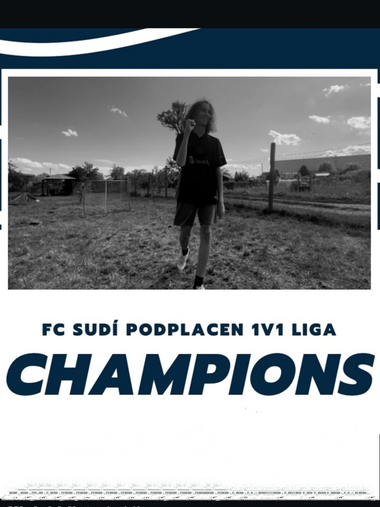
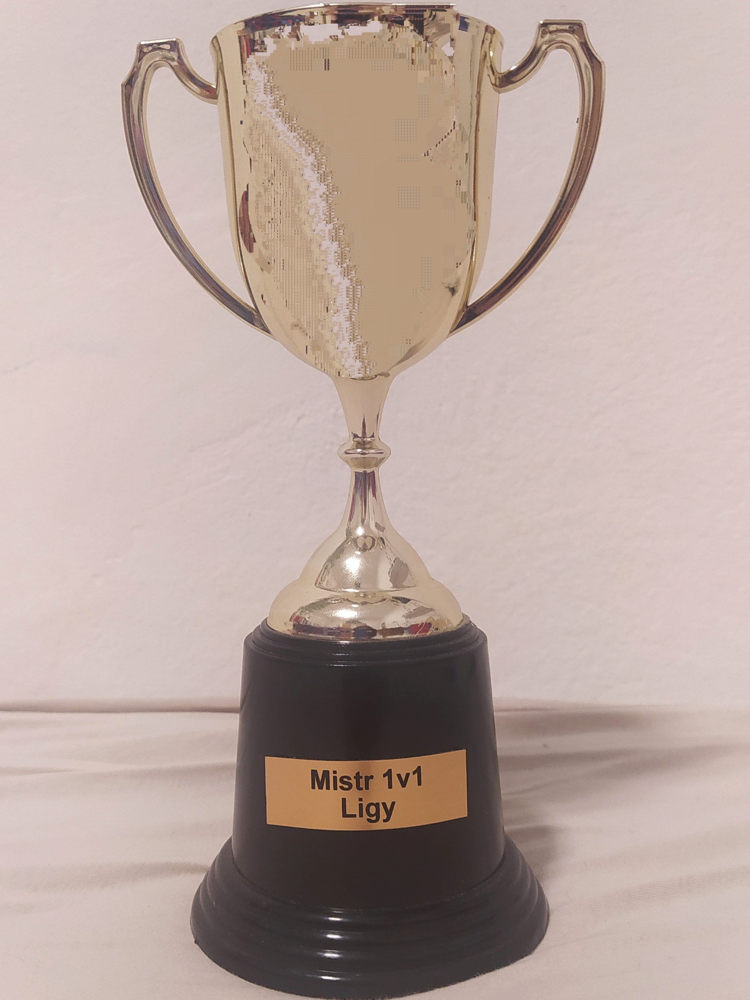
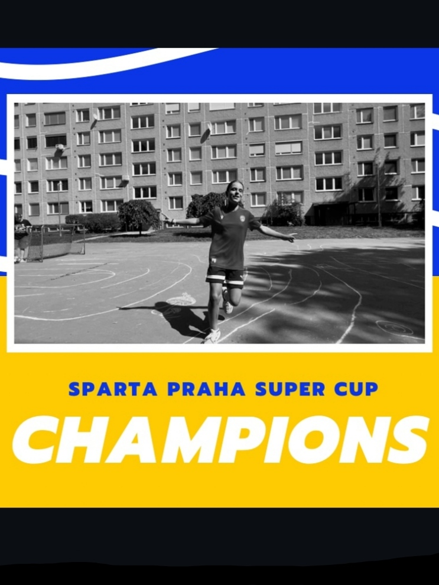
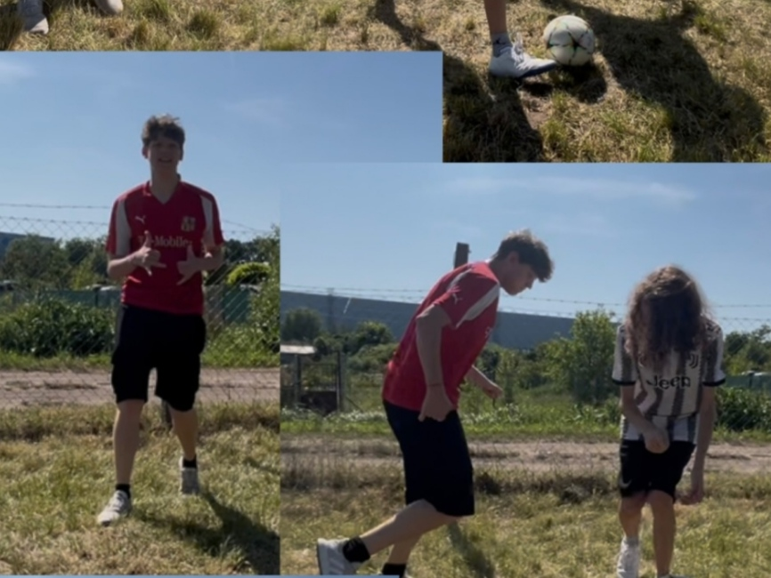

1v1 Liga - Tabulka
| Pořadí | Tým | Odehrané zápasy | Vstřelené góly | Obdržené góly | Rozdíl | Body |
|---|
| Pořadí | Tým | Odehrané zápasy | Vstřelené góly | Obdržené góly | Rozdíl | Body |
|---|
Legenda klubu Polští špačci – 1 sezóna, 23 gólů, hráč 3 dne 1. sezóny 1v1 ligy. Do druhé sezóny již nenastoupil poté co ukončil svou kariéru.
V první sezóně dotáhl Jencek tým FC Sudí Podplacen k titulu, za celou sezónu získal 22 bodů.
Putovní pohár udělovaný od roku 2025.
Kromě 1v1 ligy se v rámci svazu hraje ještě jedna soutěž na klubové úrovni, a to SuperCup. Jeho první ročník ovládl tým AC Sparta Praha poté co naprosto dominoval po dobu celé soutěže.
1. zápas v historii celého svazu se odehrál již 22. června 2025, jednalo se o derby mezi týmy FC Sudí Podplacen a FC Gurt Yo. Zápas skončil výhrou domácího celku za výsledku 10:6.
Legenda klubu – 120 gólů, 3 tituly.

Tým A po napínavém finále 2:1.

Putovní pohár udělovaný od roku 2000.